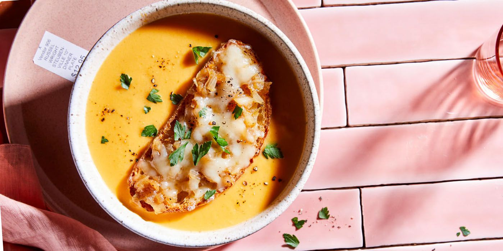

Butternut Bisque with French Onion Toast Topper

his creamy butternut bisque is served with homemade French onion toast toppers.
- 3 tablespoons butter
- 1 ½ cups chopped onion
- 1 ½ teaspoons kosher salt
- 2 tablespoons tomato paste
- 1 (2 pound) butternut squash - peeled, seeded, and cut into 1-inch cubes
- 4 cups low-sodium chicken broth
- 1 pinch cayenne peppe
- ½ cup heavy cream
- 2 tablespoons pure maple syrup
- 1 tablespoon chopped fresh parsley, or to taste
-
Melt butter in a large pot over medium-low heat. Add onion and 1/2 teaspoon kosher salt. Cook, stirring frequently, until onion is tender but not browned, about 10 minutes.
-
Increase heat to medium-high. Stir in tomato paste. Cook, stirring frequently, until mixture begins to caramelize and brown, about 2 minutes. Add squash, chicken broth, remaining kosher salt, and cayenne pepper. Reduce heat to medium-low and simmer until squash is very tender, 20 to 25 minutes. Reduce heat to low.
-
Using an immersion blender, blend squash mixture until smooth. (Or transfer mixture, in batches if needed, to a blender or food processor. Cover and blend or process until smooth. Return to pot.) Stir in cream and maple syrup.
-
Ladle soup into wide shallow bowls. Serve with French Onion Toast Toppers and top with parsley.